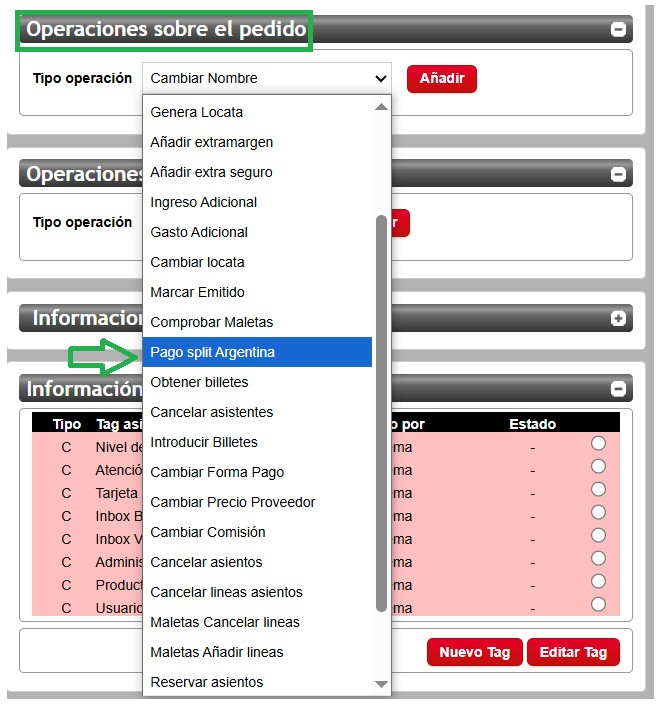
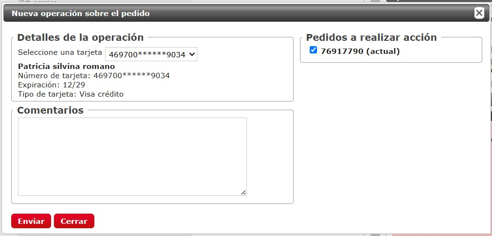
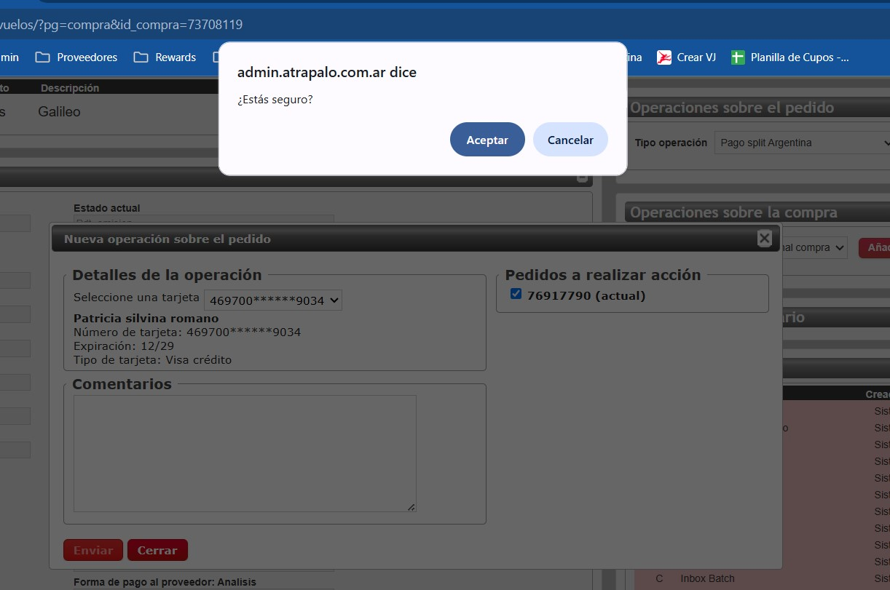
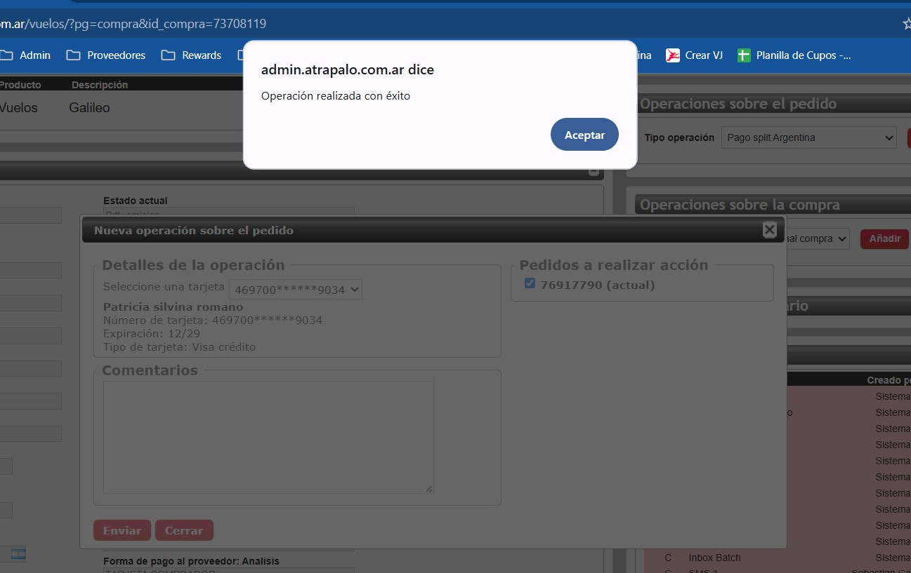
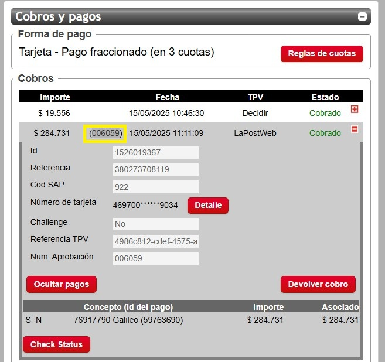
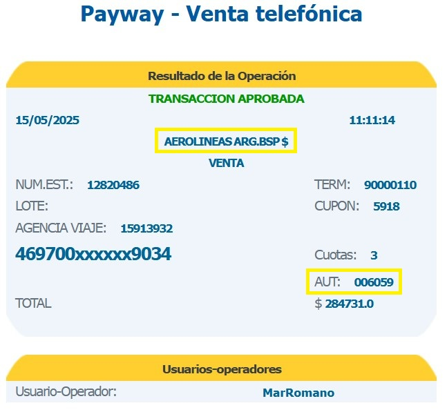
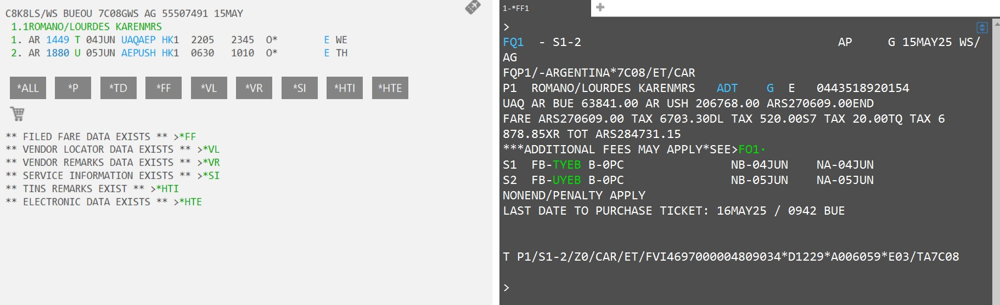

Pago Split
Luego de verificar que el pnr esta óptimo para la emisión
Paso 1: Cuadre de importe
Es importante asegurarnos que el importe mostrado en el GDS es el mismo al desglosado en las lineas del admin.
Este chequeo previo de cuadre nos va a permitir evitar errores en los montos a cobrar.
Paso 2: Captura de operación
En Operaciones sobre el pedido tenemos la opción de Pago Split Argentina

Nota importante: El sistema aún no reconoce Bines, por ende debemos asegurarnos que la tarjeta aplica la promoción seleccionada por el pax antes de dar click
Ese botón nos va a mostrar la siguiente pantalla con los datos de la tarjeta cargada en admin

Paso 3: Confirmar operación
Luego de dar Enviar, como es una gestión de cobros, el sistema va a repreguntar antes de ejecutar

Si la operacion pasa correctamente el sistema arroja el mensaje de confirmación

Notemos que no hizo falta ninguna gestión en la caja del admin, simplemente ahora el sistema nos muestra la autorización UATP que obtuvo desde LaposWeb

Si vamos a la plataforma de Payway, encontraremos el cobro ejecutado correctamente con el comercio de la aerolinea
Paso 4: Emitir tickets

Ahora solo debemos avanzar con la emisión manual en GDS utilizando el codigo UATP que muestra la caja
Procederemos a cargar la FOP y preautorización correcta en el archivo tarifario
Ejemplo de carga de FOP y preautorización en tarifa:
Comando: TMU1FVI469700XXX9034*D1229*E03*A006059

Paso 5: Cierre de pedido
Una vez emitidos los tickets, finalizaremos el procedimiento en Admin como lo hacemos usualmente.
Para ver el proceso en Admin dar click acá
Admin de ejemplo V76917790